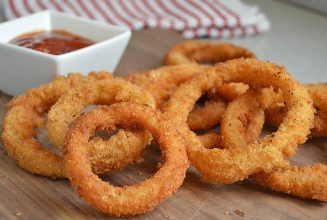

Aritos de cebolla

Ingredientes
- 2 cebollas blancas chicas
- harina
- aceite para freir
- Masa:
- 1 tz de harina sin preparar
- 1/2 tz de leche
- claras de huevos
- Sal
Preparación
- Corte la cebolla en rodajas de medio centímetro. Desprenda cada aro y reserve.
- Mezcle bien todo los ingredientes de la masa, excepto las claras.
- Bata las claras a punto de nieve. Agregue a la masa de forma envolvente.
- Pase cada aro por la harina y luego por la masa.
- Fría en abundante aceite. Retire cuando estén dorados. agregue sal al gusot.
¡Disfute sus aros de cebolla!
Aquí tienes el enlace a un video de youtube que te explicará mejor.